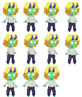
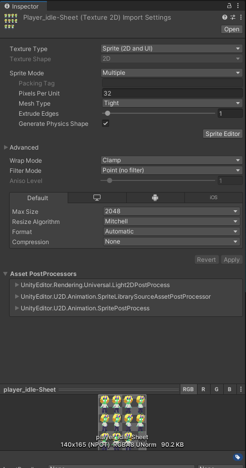
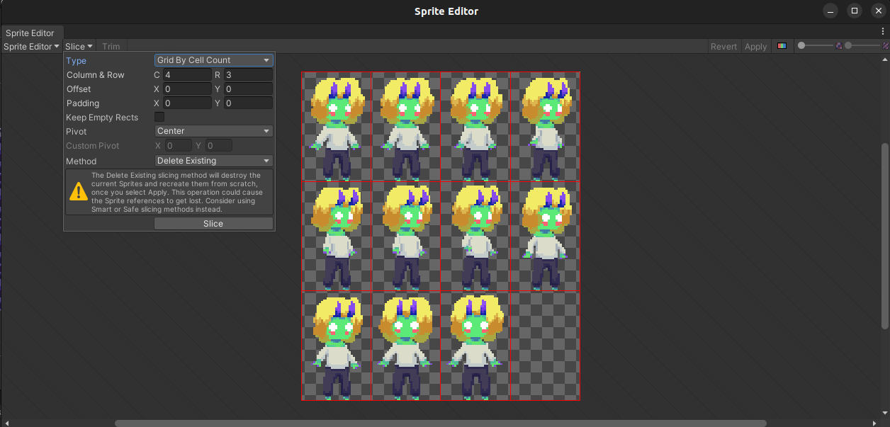
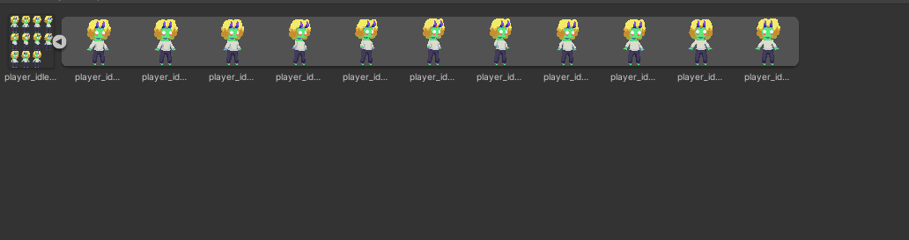
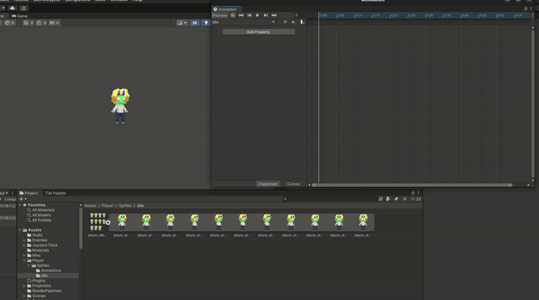

Uma Sprite Sheet é, simplesmete, um conjunto de sprites em um só arquivo

Utilizar spritesheets nos ajuda a manter os arquivos do projeto mais organizados, e facilita na hora de importar animações e tilemaps.
Vamos implementar a animação de idle da jogadora! Primeiro importe a imagem acima ao seu projeto e a configure da seguinte forma:

O que define que estamos usando uma sprite sheet é que selecionamos o Sprite Mode “Multiple”. Note que caso queira usar uma imagem que não é pixel art, não é necessário mudar o filter mode ou a forma de compressão.
Para definir onde ficam as divisões entre os sprites, clique em Sprite Editor, em seguida em Slice > Grid by Cell Count(ou cell size, se preferir), defina o número de linhas e colunas (ou o tamanho delas) , clique em slice e então apply no canto superior direito.

E pronto, os sprites individuais podem ser vistos ao clicar na setinha na sprite sheet no projeto!

Para transformar sprites em animação, primeiro abra a janela de animação em Window > Animation > Animation (ou aperte ctrl + 6). Com a janela aberta, Selecione o objeto ao qual deseja adicionar animações e clique Create. Uma janela vai aparecer para que você crie um arquivo de animação, dê o nome de idle.anim (ou o que quiser!).
Arraste os sprites da animação à timeline, duplicando o ultimo frame. Você pode então definir a velocidade desejada aumentando a distancia entre os frames (lembre que por padrão há 60 frames em um segundo).
